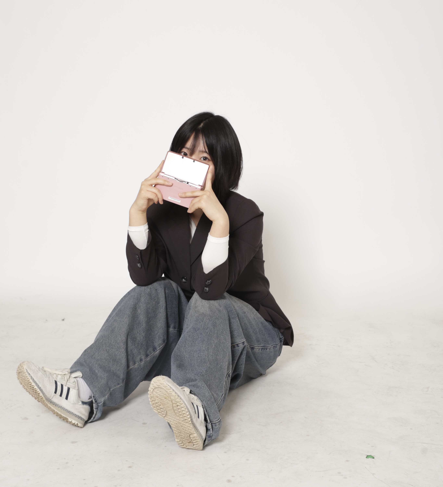

yuzineda
신유진
물병자리 | INTP | Korean

2025년 후기
이 사이트의 컨셉을 위해 2025년을 뒤돌아 보면서 생각보다 새로운 경험을 많이 겪었다는 것과 잠깐 잊고있었던 다양한 추억들이 많다는걸 깨달았습니다. 학교에선 다양한 기술과 지식, 새로운 환경을 혼자 적응하면서 많은 것을 배울 수 있었던 뜻깊은 2025년 이었던 것 같습니다.
Skills / Tools
Experience / Education
- 계원예술대학교 디지털미디어디자인과 재학중